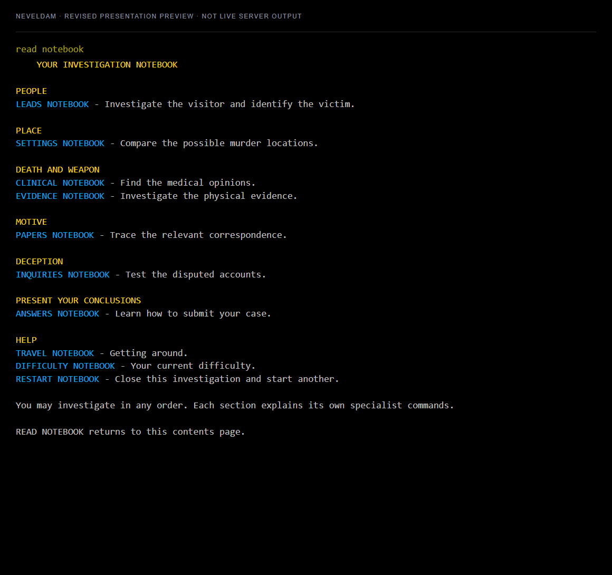

1. Your first five minutes
- From Neveldam Shuttle Landing, go east to The Baker Street Doorstep.
- Pick a difficulty:
DIFFICULTY ASSISTED,DIFFICULTY DETECTIVEorDIFFICULTY EXPERT. Detective is the default. If you’d like some extra help on your first visit, try Assisted. - Type
ENTER 221Band read Holmes’s introduction. Then useREAD NOTEBOOKto see where to begin. - Use
LEADS NOTEBOOKfor your first leads. From the Sitting Room, go east to The Consulting Table, then east again to The Identification Archive.READ CARDSlists the people in the case;EXAMINE <surname>opens a person’s dossier. - Choose either the visitor’s or the victim’s trail. Visit the person named in your notebook and read the papers they direct you to. Check that notebook again whenever you need your next lead.
DIFFICULTY DETECTIVE
ENTER 221B
READ NOTEBOOK
LEADS NOTEBOOKSend one command at a time. In examples such as <surname> or <paper>, use the name shown in your case and leave out the angle brackets.
If you’ve just closed a case in the Sitting Room, choose your next difficulty there and type BEGIN DOCKET. You don’t need to leave and re-enter.
2. Choosing a difficulty
| Mode | What changes |
|---|---|
| Assisted | Some of the paperwork has already been checked and countersigned for you. You can also use HINTS NOTEBOOK when you want help comparing the evidence. |
| Detective | The default. Follow the paper trails and collect independent witness observations to work out who the accounts describe. |
| Expert | More people share the same identifying features, so you may need extra observations to tell them apart. Witnesses follow their usual rounds. |
Check your current difficulty with DIFFICULTY NOTEBOOK. Meal prices, witness speed and the final verdict rules are the same in every mode. To change difficulty, finish the current case or close it and start another. Closing an unfinished case discards its findings.
3. Finding the right notebook
Think of READ NOTEBOOK as your contents page. Each section points you towards a different part of the case and explains the commands you’ll need. You don’t have to work through them in order; follow whichever lead you’re ready to tackle.
| What are you working on? | Where to start | Review your findings |
|---|---|---|
| Identifying the people | LEADS NOTEBOOK, then PURSUIT NOTEBOOK for the visitor or IDENTITY NOTEBOOK for the victim. | OBSERVATIONS NOTEBOOK |
| The meeting place | SETTINGS NOTEBOOK | ROOMNOTES NOTEBOOK |
| How the victim died and what was used | CLINICAL NOTEBOOK and EVIDENCE NOTEBOOK | READ CATALOGUE for the exhibits; MATERIAL NOTEBOOK and REFERRALS NOTEBOOK for the specimen’s paper trail. |
| The motive | PAPERS NOTEBOOK; LETTERS NOTEBOOK tells you where the original letters are kept. | PAPERNOTES NOTEBOOK |
| How someone tried to mislead you | INQUIRIES NOTEBOOK; RECORDS NOTEBOOK tells you where to find the originals. | FINDINGS NOTEBOOK for comparisons; RECORDNOTES NOTEBOOK for originals. |
| Times and journeys | TIMING NOTEBOOK and ROUTES NOTEBOOK | Go back to the records and check where your current trail points next. |
| Getting somewhere or finding someone | TRAVEL NOTEBOOK, DIRECTORY NOTEBOOK, WITNESSES NOTEBOOK | Check the offices and meeting places named in your case. |
| Finishing the case or starting over | ANSWERS NOTEBOOK or RESTART NOTEBOOK | Check what each command does before you finish or close the case. |
See the notebook menu preview

4. Following the evidence
As you investigate, ask yourself: what am I being told, what does the original record actually say, and is there another source that backs it up—or contradicts it? A convincing story still needs checking.
People
- Start with the dossiers at The Identification Archive. Several people may share a feature, so look for someone who fits all the details you’ve gathered.
- Keep track of which person you’re investigating.
PURSUIT NOTEBOOKfollows the visitor;IDENTITY NOTEBOOKfollows the victim. FOLLOW <surname>shows someone your reference; it doesn’t move you to their location. Go to the office they name, read the original withREAD <paper>, then check your notebook for the next step.OBSERVATIONS NOTEBOOKlets you reread the signed observations you’ve collected. An empty notebook just means you haven’t collected any yet.
Place
- Follow the leads in
SETTINGS NOTEBOOKand compare the descriptions the witnesses left in their separate records. - When you visit a possible room, use
EXAMINE FURNISHINGSto record how it’s arranged.ROOMNOTES NOTEBOOKlets you look back over the observations you’ve received. - Remember that a paper can describe somewhere else. The office holding it isn’t necessarily where the meeting happened.
Death and weapon
CLINICAL NOTEBOOKlists seven doctors’ reports and tells you where each is kept. Go to the named office and useEXAMINE <surname>. These are medical reports, not the personal dossiers you read at The Identification Archive.- At the comparison laboratory,
EXAMINE EXHIBITSlists the drawers. Examine each one using the name shown, then useREAD CATALOGUEwhenever you want to look back over the exhibits. - Before you can read the sealed specimen report, you’ll need all seven medical reports, all 24 exhibit examinations, the room observations and the specimen’s custody trail.
MATERIAL NOTEBOOK,DIRECTORY NOTEBOOKandREFERRALS NOTEBOOKwill help you follow the paperwork. - Once that’s done, return to the laboratory and type
EXAMINE SPECIMEN. Compare its material signature and recorded detail with the catalogue. The method of death and the particular object used are two separate answers.
Motive
- Start with
PAPERS NOTEBOOK. UsePAPERS <surname>to show a reference to the person holding it, thenREAD <copy-name>at the desk they send you to. LETTERS NOTEBOOKtells you where the original letters are kept. Examine them using their displayed names.PAPERNOTES NOTEBOOKlets you reread what you’ve learned about the torn fragment.- Look at the physical details of the paper as well as what the letter says. A dispute in the files isn’t necessarily the motive for this death.
Deception
- These accounts offer different explanations of how someone misled the investigation. You’ll need to test them.
INQUIRIES NOTEBOOKexplains which details each explanation relies on. - Use
COMPARE <surname>to ask the named person to check your references. Then useREAD Signed Enclosureat the office they name to read the signed comparison. RECORDS NOTEBOOKlists the original records and where to find them. Examine each by its wrapper’s displayed name. Look back at your comparisons withFINDINGS NOTEBOOK, and your examined originals withRECORDNOTES NOTEBOOK.- After examining the originals and gathering enough comparisons, go to The Casebook Gallery and use
COMPARE COUNTERFOILfor the final signed comparison. You don’t have to read every reference to get there.
5. Getting around and meeting witnesses
TRAVEL NOTEBOOK explains the carriage routes. To use one, go to the departure office shown below; the command won’t work from just anywhere.
| Departure office | Command | Arrival |
|---|---|---|
| The Carriage Office – Entrance Hall | VISIT CITYGATE | The Lodging House Approach |
| The Route and Departure Office | VISIT RIVERGATE | The Wharf Landing |
| The Carriage Office – Inner Passage | VISIT ESTATEGATE | The Alderwick Gatehouse |
| The Carriage Office – Booking Room | VISIT MOORGATE | The Blackthorn Arrival Shelter |
To come back, use RETURN CARRIAGE at the district’s arrival office. You can investigate all four districts, regardless of the filing tabs on your papers.
Witnesses move around. Check WITNESSES NOTEBOOK for their rounds and meeting places. At the tavern listed for that witness, use ARRANGE <surname> to leave a message, then WAIT <surname> until they arrive. Use FOLLOW <surname> to discuss your reference once they’re there. TALK <surname> starts an ordinary conversation; it doesn’t present the reference.
You can log out and come back without losing the case. Its records stay in the same places, even if you leave 221B. When you return, check your notebooks to pick up where you left off—there’s no need to reset. Keep an eye on your stamina, and leave yourself enough money for meals.
6. Keeping useful notes
You don’t need to copy every description. A few short notes can make it much easier to see what you know and what you still need to check. For each useful observation, jot down:
| Where it came from | What it tells you | What it leaves open | What to check next |
|---|---|---|---|
| The witness or record, and where you found it | The detail you can actually point to | Anything uncertain, missing or outside the source’s knowledge | Another source that could confirm or challenge it |
Keep separate notes for the visitor, victim, place, method, weapon, motive and deception. With times, note what happened and which clock or record the time came from. It’s fine to leave a question unanswered for now. Mark guesses as guesses so they don’t get mixed in with the facts.
7. Present your case only when you are ready
In the study, you’ll enter eight conclusions in the ledger. The commands below show the format; fill them in using the names and terms from your own case.
| Conclusion | Entry command |
|---|---|
| The murderer | SUSPECT <surname> |
| The victim | VICTIM <surname> |
| The method of death | METHOD <term> |
| The place | SCENE <place-key> |
| The motive | MOTIVE <term> |
| The deception | THEORY <term> |
| The supporting record (corroborating evidence) | EVIDENCE <record-key> |
| The particular weapon or object | WEAPON <catalogue-key> |
The evidence entry is for the record or wrapper you examined, not the weapon or a type of material. ANSWERS NOTEBOOK explains how to enter it.
Check your entries with READ LEDGER and REVIEW LEDGER. An entry being accepted doesn’t mean the answer is correct. To change one, type its command again with your new answer.
8. Closing a case and starting another
If you want to abandon the current case, go to 221B – The Sitting Room. RESTART NOTEBOOK explains the process in-game. To close the case, send these two commands separately:
RESET DOCKET
CONFIRM DOCKETDIFFICULTY ASSISTED
BEGIN DOCKETYou can replace the Assisted line with DIFFICULTY DETECTIVE or DIFFICULTY EXPERT. Closing a case doesn’t remove completion records or rewards you’ve already earned, but it does discard that case’s evidence and findings. If you’re only taking a break or reconnecting, leave it open.
9. If you’re stuck
| What’s happening? | What to try |
|---|---|
| You can’t change difficulty | Your case is already open. Finish it, or follow the reset instructions above to start over. Closing it will discard its findings. |
| Your identification observations are empty | Read PURSUIT NOTEBOOK or IDENTITY NOTEBOOK, follow a reference and read the original at the office it names. |
| You’re not getting a new lead | Check your notebook, the person’s name, the paper’s exact name and where it’s kept. Showing someone a reference and reading the paper they send you to are two separate steps. |
| You can’t find a witness | Look up their meeting place in WITNESSES NOTEBOOK, then arrange a meeting and wait at the right tavern. FOLLOW doesn’t move you there. |
| You can’t read the specimen report | Check EVIDENCE NOTEBOOK: have you read all seven medical reports, examined all 24 exhibits, collected the room observations and finished the material custody trail? |
| A paper isn’t where you remember it | Check the notebook for this case. Papers can be assigned to different offices in a new case, so an old location list—or another player’s—may send you to the wrong place. |
| You’re ready to enter the study, except for one question | Answer it before using PRESENT CASE. You won’t be able to go back out for more evidence, and SUBMIT LEDGER will end the case. |
If you’d like a nudge, try the separate Optional Hints guide. The hints get more specific as you go, but won’t name the culprit or walk you through a solution. In Assisted mode, you can also ask for help with HINTS NOTEBOOK.
This draft follows the Neveldam update dated 17 October 2026. Your server may not have that update yet. If something reads differently in-game, check the notebooks there and report anything that seems wrong.